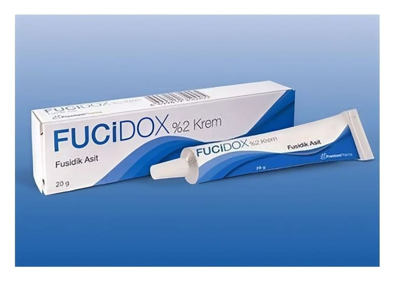

Fucidox %2 Krem ,20 g Tüp

Ne için kullanılır
KT · Bölüm 1FUCİDOX 20g’lık alüminyum tüplerde sunulan, beyaz, yumuşak, homojen kremdir. FUCİDOX’un etkin maddesi olan fusidik asit; bir antibiyotik olup birçok mikroorganizma üzerinde güçlü antibakteriyel (bakterileri tahrip eden veya onların çoğalmasını engelleyen) etkiye sahiptir. FUCİDOX’a duyarlı organizmaların oluşturduğu deri hastalıklarının tedavisinde kullanılır.